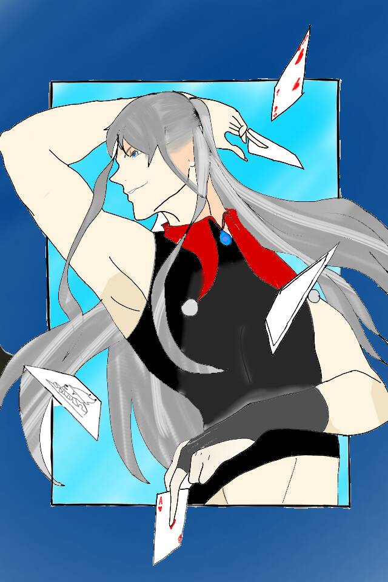

魔術師
The Magician
四大元素：元素風--
代表的神話人物：商業之神赫爾墨斯
魔術師掌握著金幣、寶劍、權杖和聖杯，擁有無限的資源，充滿熱情、持久力並具有群眾魅力。
他的知識無窮無盡，一同他的原形——知曉煉金術、占星術及魔法的赫爾墨斯——。即使旁人認為不切實際，魔術師仍能巧妙地抓住時機，展現如奇蹟一般令人驚嘆的成果。
魔術師卡牌擁有將事物點石成金的能力，他能讓天上的靈感和能量化為地上實質的事物，象徵豐富的「創造力」。
卡牌顯示此刻萬事具備，已經獲得足夠強大的能量，正是展開新計劃的好時機。